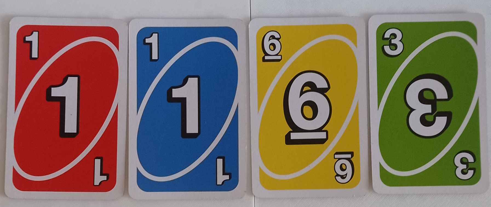
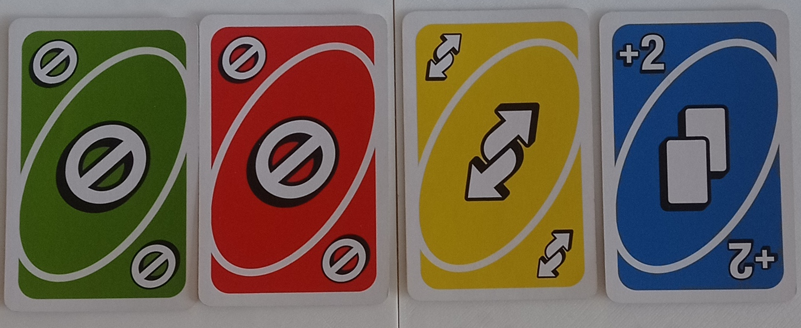
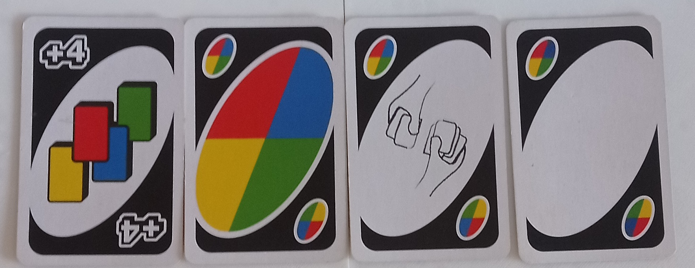

UNO
«UNO» — это карточная соревновательная настольная игра для 2–10 человек, наверное, одна из самых популярных карточных игр, крайне веселая и занимательная. Но помимо этого, она еще и простая. Правда, с правилами произошел какой-то курьез, ведь в разных компаниях разные понятия правил, а точнее, о некоторых моментах в правилах. Но основа у всех одна, поэтому здесь я расскажу про те правила, которые я нашел в интернете. Если вы не играли в «UNO», вам обязательно нужно это сделать.
как проходит игра
Каждому игроку выдается по семь карт, кроме того, кто раздавал. Вместо этого он кладет последнюю карту из колоды на стол, тем самым начиная игру и завершая
свой первый ход. Теперь игроки поочередно по часовой стрелке кладут свои карты друг на друга. Чтобы положить карту, она должна соответствовать одному из условий:
цвет вашей карты должен совпадать с цветом самой верхней карты на общей стопке, либо номер вашей карты должен совпадать с номером самой верхней карты на общей
стопке. Если у вас нет карт, соответствующих одному из условий, вы берете 1 карту из колоды, и если она тоже не соответствует условиям, вы пропускаете ход.
Когда у вас остается одна карта, вы должны сразу сказать слово "UNO!" Если этого не сделать, вы получите штраф в виде двух карт и пропуска хода. Игра закончится
тогда, когда у кого-то из игроков не останется в руке карт (но вы можете продолжить играть, чтобы выяснить, кто на втором месте, на третьем и т.д.).
элементы игры и правила
игровое поле
Игровое поле соберется из стопки карт, которые игроки сами собирают по ходу игры.
основные карты

Всего у основных карт есть четыре цвета и цифры от 0 до 9, плюс к этим картам добавляются их дубликаты.
особые карты

Особые карты также имеют 4 цвета; они могут совершать специфические манипуляции над игрой, такие как:

Дикие карты имеют сразу 4 цвета; они могут совершать особые манипуляции над игрой, такие как:
Остальные, более глубокие механики игры мы уже разберём по ходу геймплея за столом. :3